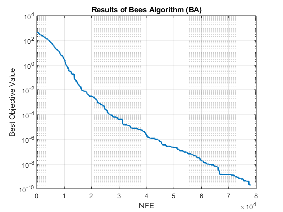

Bees Algorithm
This document shows how Bees Algorithm (BA) as a part of Yarpiz Evolutionary Algorithms Toolbox (YPEA) cab be used to solve optimization problems.
Contents
Problem Definition
First of all, we need to define optimization problem. We must define the search space (decision variables) and objective function.
Let's ceate an instance of optimization problem.
problem = ypea_problem();
Assume that the problem is to find 20 real numbers, in range -10 to 10.
problem.vars = ypea_var('x', 'real', 'size', 20, 'lower_bound', -10, 'upper_bound', 10);
And, the objective is to minimize the well-known sphere function in this domain.
sphere = ypea_test_function('sphere');
problem.obj_func = @(sol) sphere(sol.x);
To get more information on the optimization problems and decision variables, you can go to Optimization Problems and Decision Variables.
Bees Algorithm
Now, we are ready to create, initialize and utilize the Bees Algorithm (BA) to solve the optimization problem, defined above.
First, we must create an instance of algorithm class:
alg = ypea_ba();
There are two versions of the Bees Algorithm available in YPEA Toolbox:
- Standard Bees Algorithm, which can be set and used by alg.type = 'standard' or 'std' simply.
- Probabilistic Bees Algorithm, which can be set and used by alg.type = 'probabilistic' or 'prob' simply.
The parameters for the Standard BA are listed below:
- Ratio of Selected Sites to Population Size (selected_site_ratio, default: 0.5)
- Ratio of Selected Sites Bees to Population Size (selected_site_bee_ratio, default: 0.1)
- Ratio of Elite Sites to Selected Sites (elite_site_ratio, default: 0.4)
- Ratio of Elite Sites Bees to Selected Sites Bees (elite_site_bee_ratio, default: 2)
The only parameter for the Probabilistic BA is as follows:
- Ratio of Recruited Bees to Population Size (recruited_bee_ratio, default: 0.1)
These properties are common in both of BA versions:
- Bee Dance Radius(dance_radius, default: 0.1)
- Bee Dance Radius Damping Rate(dance_radius_damp, default: 0.99)
Here, we use the standard version. Let's set the parameters of the algorithm.
% Maximum Number of Iterations alg.max_iter = 1000; % Population Size alg.pop_size = 30; % Type of Algorithm (Standard or Probabilistic) alg.type = 'standard'; % Selected Sites Ratio (wrt. Scout Bee Count or Population Size) alg.selected_site_ratio = 0.5; % Selected Sites Bee Count Ratio (wrt. Scout Bee Count) alg.selected_site_bee_ratio = 0.1; % Elite Sites Ratio (wrt. Selected Sites Count) alg.elite_site_ratio = 0.4; % Elite Sites Bee Count Ratio (wrt. Selected Sites Bee Count) alg.elite_site_bee_ratio = 2; % Bees Dance Radius alg.dance_radius = 0.1; % Bees Dance Radius Damp Rate alg.dance_radius_damp = 0.99;
And now, we are ready to run the algorithm and solve the problem. The solve method, gets problem as input and returns best_sol, the best solution found by the algorithm.
best_sol = alg.solve(problem);
Bees Algorithm started ... Initializing population. Iteration 1: Best this. Value = 461.8204, NFE = 108 Iteration 2: Best this. Value = 432.9957, NFE = 186 Iteration 3: Best this. Value = 430.478, NFE = 264 Iteration 4: Best this. Value = 422.606, NFE = 342 Iteration 5: Best this. Value = 420.0808, NFE = 420 . . . Iteration 995: Best this. Value = 2.1318e-10, NFE = 77640 Iteration 996: Best this. Value = 2.0776e-10, NFE = 77718 Iteration 997: Best this. Value = 2.0776e-10, NFE = 77796 Iteration 998: Best this. Value = 2.0201e-10, NFE = 77874 Iteration 999: Best this. Value = 1.9546e-10, NFE = 77952 Iteration 1000: Best this. Value = 1.9546e-10, NFE = 78030 End of optimization.
You may turn of the text output, by disabling the display property, just befor running the algorithm (i.e. calling alg.solve(problem)).
alg.display = false;
Results
The actual solution, is stored in the solution field of best_sol.
best_sol.solution
ans =
struct with fields:
x: [1×20 double]
The values of 20 decision variables, denoted by x is as follows:
best_sol.solution.x
ans = 1.0e-04 * Columns 1 through 7 -0.0178 -0.0163 0.0126 0.0443 0.0023 -0.0053 -0.0035 Columns 8 through 14 -0.0353 0.0167 -0.0310 -0.0168 0.0041 0.0247 0.0084 Columns 15 through 20 -0.0190 0.0288 0.0390 0.0171 -0.0171 -0.1002
and the related objective value is:
best_sol.obj_value
ans = 1.9546e-10
Total run time of the algorithm is given by (in seconds):
alg.run_time
ans =
7.6405
and total number of function evaluations is given by:
alg.nfe
ans =
78030
We can illustrate the result of optimization process by plotting best objective value history (alg.best_obj_value_history) vs. number of function evaluations (alg.nfe_history).
figure; alg.semilogy('nfe', 'LineWidth', 2); xlabel('NFE'); ylabel('Best Objective Value'); title(['Results of ' alg.full_name]); grid on;